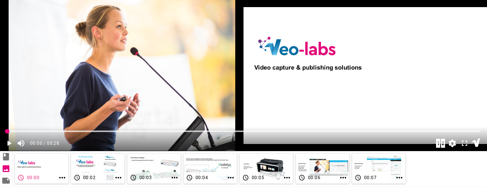

What's OpenVeo Player?
OpenVeo Player is an AngularJS component to wrap an HTML5, Youtube or Vimeo player aiming to offer images synchronization and points of interest (chapters, tags).
Compatibility
OpenVeo Player has been tested on the following browsers:
- Google Chrome 58
- Mozilla Firefox 52
- Opera 45
- Edge


Screenshots
